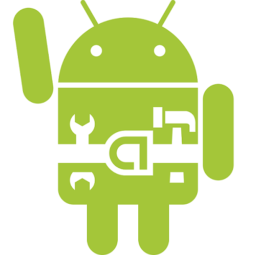
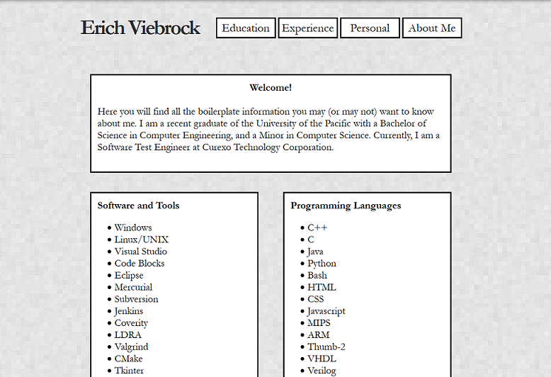

Android Application

Developed the sliding block puzzle game "Rush Hour" in Java and XML. Used the Android SDK, as well as the Android Developer Tools plugin for the Eclipse IDE. The application was ported to the Android Play Store, downloadable and playable for any Android device version 2.2 or higher.
Source Code in Progress
Event Scheduler and Calendar
Created a calendar application with MySQL for allowing a user to enter a date and time of an event, enable a notification for the event, event notes, and then schedule the single or reoccurring events within a database. The user can then browse the calendar, search for specific events, or modify pre-existing events.
Source Code in Progress
This Website!

This portfolio has been, and will always be an ongoing project to currently reflect my capabilities as an engineer. Not only will future projects be added to the website as they become apparent, but the logic will be changed as well. This portfolio was created from scratch with XHTML and CSS, without a template of any sort.
Source Code in Progress